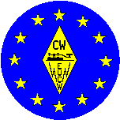
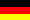
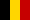
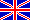
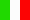
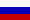

Europeiska CW-förbundets historia
Senast reviderad 2000-06-14 [Detta kan inte stämma eftersom det är daterat 2007 nedan. Översättarens anmärkning.]
EuCWs ordföranden
 SMØIX Sven Milander c/o SCAG 1980
SMØIX Sven Milander c/o SCAG 1980
DL7DO Ralf Herzer c/o AGCW 1981 G8PG Gus Taylor c/o G-QRP 1982
G8PG Gus Taylor c/o G-QRP 1982 PAØDIN Din Hoogma c/o VHSC 1983
PAØDIN Din Hoogma c/o VHSC 1983- SM5TK Kurt Franzén c/o SCAG 1984
- DL6MK Edgar Schnell (sk) c/o HSC 1985-1987
- G4FAI Tony Smith c/o G-QRP 1988-1990

ON5ME Oscar Verbanck c/o SHSC/EHSC
(*) 1991-2006  LZ1PJ Ivan (Johny) Ivanov c/o LZCWC
2007-2013
LZ1PJ Ivan (Johny) Ivanov c/o LZCWC
2007-2013
G5VZ Chris Pearson c/o FISTS 2013-2016

I5SKK Alessandro Santucci c/o INORC 2016/9
to 2019/8
- IZ2FME Michele Carlone c/o INORC 2019/9 to
2022/8

RM2D Mats Strandberg c/o UQRQ-C 2022/9 to
2025/8- M0KTZ Enzo Nicosia c/o FOC 2025/9 to 2028/8
EuCWs tillväxthistoria (datum då klubbar gick med)
- 1979
- EuCWs grundande klubbar: SCAG (SM/OZ), AGCW (DL), GQRP (G).
- till 1981
- TOPS (G), SARS (Scarborough ARS)(G), HSC (DL), CWC (HB9), VHSC
(1981.11.28)(PAØ).
- 1982
- BQRPC (PA/ON/LX), INORC (I).
- 1983
- HCC (1983.09.01)(EA).
- 1986
- BTC (1986.02.15)(ON), UFT (1986.09.01)(F), SHSC (1986.12.01)(ON).
- 1988
- FISTS (1988.06.01)(G), U-QRQ-C (1988.12.03)(R).
- 1989
- FOC (1989.09.01)(G).
- 1990
- EHSC (ON).
- 1991
- HACWG (HA), U-CW-C (R/UR).
- 1992
- OK-QRP (OK), CTCW (CT).
- 1993
- HTC (HB9).
- 1994
- 3A-CW-G (3A), MCWG (Z2), OHTC (OH), EA-QRP-C (EA),
- 1995
- SPCWC (SP).
- 1997
- 9A-CWG (9A), I-QRP-C (I).
- 1998
- OE-CW-G (OE).
- 1999
- ITC (I), YL-CW-G (DL), RTC (DL).
- 2000
- GTC (SV).
- 2001
- CFT (ON).
- 2002
- EACW (EA).
- 2003
- CTC (9A).
- 2004
- LZCWC (2004.08.20)(LZ), RU-QRP (2004.12.22)(R).
- 2005
- IS-QRP (2005.09.21)(IS0).
- 2010
- Marconisti (2010.04.01)(I), Essex CW Club (G).
- 2018
- GPCW (2018.01.01)(CT).
Nystart av CTCW
- 2018
- Long Island CW Club (2019.12.01)(W, associerad klubb).
- 2021
- NTC - Netherlands Telegraphy Club
(PAØ, medlem sedan 2021-09-15)
Andra händelser i EuCW
- 1978
-
SCAG tog det första initiativet.
Stadgarna föreslogs den 1978-06-27
(dessa stadgar är återgivna i SCAG-NL nummer 50 från April 1978).
Enligt dessa stadgar är det bara klubbar med åtminstone
100 medlemmar kan bli medlem.
Ledarskapet i EuCW skall rotera årligen.
- 1979
- EuCW grundas officiellt.
- 1986
-
CWC (HB9) togs bort 1986-02-15.
SCAGs ledning föreslår SCAGs utträde ur EuCW (1986-03-01)
att tas upp på årsmötet.
1986.05.31: SCAGs årsmöte i Köpenhamn fördröjer beslutet om EuCW-utträde.
DL6MK får problem att hitta en ny EuCW-ledare.
TOPS, SARS, HCC, INORC kan inte ta över ledarskapet.
UFT föreslår ett EuCW-diplom.
- 1987
- DJ2XP tar över EuCW FP-aktiviteten.
Datum för FP ändras från Juni till sent i November.
1987-04-25: SCAGs årsmöte i Täby överger planerna på ett utträde ur EuCW.
- 1988
-
GQRPs nybörjardiplomet får status som en officiell EuCW-aktivitet.
EuCW-nätet (80 m QTC-nät) är igång sedan i september.
- 1990
-
TOPS drar tillbaka sitt medlemsskap p.g.a. brist i aktivitet (1990-07-01),
möjligheten att gå med igen finns kvar.
Broderskapliga länkar till icke-europeiska klubbar skapas:
QRP-ARCI (W/K) och
GPCW (PY).
SCAGs Straight Key Day (Handpumpsdagen) blir en officiell EuCW-aktivitet.
- 1991
-
Worked EuCW Award (Kört EuCW-diplomet) skapades (1991-04-27) i åminnelse
av Samuel F.B. Morses 200 åriga födelsedag.
HCC (Spanien) stod för tryckkostnaden (i Storbrittanien) för diplomen,
som designades av G4FAI.
Den första som erövrade diplomet var: DK9EA (1991-09-30).
Generösa donationer som mottogs från andra klubbar reserverades för
framtida speciella projekt.
CWAS (PY) blir en till långväga gäst. Den ta över GPCWs (PY) uppgifter.
- 1992
-
Medlemsskapsreglerna förändrades för att ge möjlighet för små klubbar.
Beslutet togs med brev-votering.
18 klubbar bjöds in att rösta,
13 var för förändringen,
en (1) emot,
en (1) för med villkor och
tre (3) klubbar svarade inte.
- 1993
-
SLDXC (Saar-Lorraine DX club) ansökte om medlemsskap men det användes
ett veto mot den eftersom den är frågan om en DX-klubb snarare än en CW-klubb.
Det etablerades en väldefinierad policy för medlemsskapsansökan,
alla icke-CW-klubbar och alla icke-europeiska klubbar kommer att tas
bort under ansökningsförfarandet.
QRP-klubbar kommer att förbli ett undantag eftersom QRP är nära besläktat
med telegrafi.
EuCW FP-aktiviteten får en sponsor till i EA3DOS som donerar miniatyrnycklar
("Lilliput") till vinnarna.
- 1994
-
Nya stadgar antogs.
Bland ändringarna finns:
Klubbar med åtminstone 100 medlemmar kommer att ha fullt
(dvs. röstberättigat) medlemsskap.
Klubbar med fem (5) till 99 medlemmar kommar att ha begränsat
(dvs. icke-röstberättigat) medlemsskap.
Ordförandens mandatperiod är tre (3) år.
- 2000
-
Medlemsskapsansökan från CW-C-UFRC (Belgien) publicerat i
EuCW Bulletin 2000/2.
Även GACW från Argentina erbjöd samarbete med EuCW.
Förslag till en ny konstitution.
- 2001
-
CW-C-UFRC (Belgien) ändrade namn till CFT.
FISTS skänker en EuCWs QRS-vecka till att bli en ny EuCW-aktivitet.
Första QRS-veckan hålls i april 2001.
UFT dedikerar en 160m-tävling till EuCW.
- 2002
-
Professional Radio Operators CW Club International
(Den internationella telegrafiklubben för professionella operatörer)
från Rumänien
ansökte om medlemsskap men fick veto.
- 2006
-
DJ2XP pensionerade sig från sin post som
EuCW-diplom- och
EuCW FP-aktivitetsansvarig.
Dessa arbeten togs över av DK7VW.
Oturlingt nog försvann resultaten från 2005 års EuCW FP-aktiviteten
under övertagandet.
LZ1PJ accepterade att bli ordförande av EuCW från och med 2007.
- 2007
- ON5ME gick bort i januari. Han var en exceptionell förespråkare
och då speciellt för EUCW. Hans donationer täckte samtliga löpande
kostnaderna för ordförandeskapet under has tjänstetid.
Ivan Ivanov, LZ1PJ, tog över som ordförande, han införde elektroniska
media i klubbens drift.
- 2010
- Essex CW ARC tillkom som ny kandidat för medlemsskap. Medlemsskapet godkändes så småningom.
- 2013
- Klubbarna OHCW, BTC, GACW, and HCC betraktas som vilande.
Här fortsätter jag!
The
term 2013-2016 of the chairman was offered to BQC. BQC chose not to
fill the office as Chairman. Elections for a new chairman are being
held in summer. G3VTT (ECM FOC) volunteered as election officer for
the 2013 elections. During the month of July potential candidates
were invited to present themselves for the election. Two candidates
were found.
During the month of August the elections were held. The winner was
G5VZ who took office in September.
After a consultation period the traditional contest EUCW Fraternising Party was discontinued. EUCW
thanked DK7VW for the good work done as Manager from 2006 to its
final edition in 2013. The consultation showed a declining interest
of EuCW club officials in a contest. In fact many realized that a
classical contest is hardly useful to foster friendship. Moreover,
there is no lack of contests on the HF bands and one more ore less
won't make too much of a difference. The chairman got the task to
order the different alternative proposals and come up with an on-air
activity far beyond contesting.
- 2014
- The long-term activity "Snakes And Ladders" was presented for the
time period April 2014 through March 2015. The basic idea is to
foster normal CW QSOs on the CW bands preferably on the upper parts
of the CW bands far away from contests and from pile-ups and DX
operation. A minimum duration of the QSO was set to 5 minutes in
order to promote a culture of conversation.
As an additional incentive a game of luck is presented based on the
QSOs of a calendar month. DM4RW could be won as manager of this
activity.
Though participation itself is as easy as providing an ADIF QSO list
the rules of the game of luck is a bit more sophisticated and harder
to read than a usual description of award or contest rules. A group
of enthusiastic ECMs provided the rules in at least TEN EUROPEAN
LANGUAGES. Never before in history of EUCW there was a project with
so many ECMs involved. Special thanks go to the main authors of the
language versions as listed in here.
The company Begali promised to sponsor two free keyers that will be
donated to two selected participants after the first of S+L.
S+L produced about 1000 QSOs per month which is a good start.
Updates for the version after March 2015 were decided. The appearance
of snakes was randomized, the role of the preferred frequencies was
emphasized.
- 2015
- Snakes and ladders version 2 was organized from March to
December.
- 2016
- Snakes and Ladders was upgraded to its third version. Friendship
between operators is now in the foreground. Even repetitive QSOs with
the same station contribute to the individual results.
Sadly the German club RTC became inactive and its web page and domain
were erased in April. Likewise the German YLCWG was declared dormant
since August.
On 1-SEP-2016 the new EUCW Chairman took office. This new three year
term is under the responsibility of INORC. INORC supports EUCW with
Alessandro, I5SKK as EUCW Chairman, and Italo, I0YQX, as ECM of
INORC.
- 2017
- Snakes and Ladders remained stable and created typically 1000
QSOs per month. The center of activity is in the United Kingdom.
- 2018
- Snakes and Ladders remained stable and well. CTCW and 3A-CWG
retracted their membership, EACW was declared dormant since there
were no news for years. CTCW was replaced by GPCW. First measures
were taken to prepare the succession of the chairman I5SKK. According
to the rotary principle UFT had the right of succession. UFT declined
early and the chairman launched a call for candidates for
chairmanship.
- 2019
- LZCWC was declared dormant in Jan 2019. No contact to the club
could be established by the chairman.
Two candidates volunteered for the chairmanship of the term Sept.
2019 through Aug. 2022. The candidates and their host clubs were
ON4LDL c/o CFT (Belgium) and IZ2FME c/o INORC (Italy). Elections were
held among the clubs with more than 100 active members.
On Sep 1, 2019 IZ2FME took office as EUCW chairman after winning the
elections.
- 2021
- The EUCW award manager passed away, the stock of paper awards
could not be recovered. The award is now digital and free of charge.
In November 2021 DF4WX volunteered as new award manager.
According the rotary principle of EuCW, the presidency was offered to
U-QRQ-C because it is the oldest member club which neither had a presidency
no rejected a presidency in the past. Eventually, the United QRP club
has chosen Mats, RM2D as chairman.
- 2022
-
On Sep 1, 2022 RM2D took office as EUCW chairman as appointed by
his club.
- 2025
-
On Sep 1, 2025 M0KTZ took office as EUCW chairman appointed by FOC.
Not:
Denna lista baseras på mitt arkiv med AGCW-Info och SCAG-NL från
80-talet och mitt EuCW-bulletinarkiv som startade 1991.
Flera vänner har hjälpt till att förbättra informationen,
se listan nedan.
Trots det är listan inkomplett och kan innehålla felaktigheter.
Sänd rättelser och ytterligare information till:
... eucw (at) agcw.de ...
Tack på förhand.
(*) ON5ME stod för alla omkostnade för ordförandeskapet under
hela sin tid som ordförande, dvs. EuCW-medlen för ledningen har
bara används för att täcka kostnader åt andra EuCW-funktionärer.
Tack Oscar.
Listan med personer som hjälpt till i historiebeskrivningen:
Rättningar och uppdateringar har kommit från:
PAØDIN,
ON5ME,
DK5KE,
G4FAI
(i kronologisk ordning).